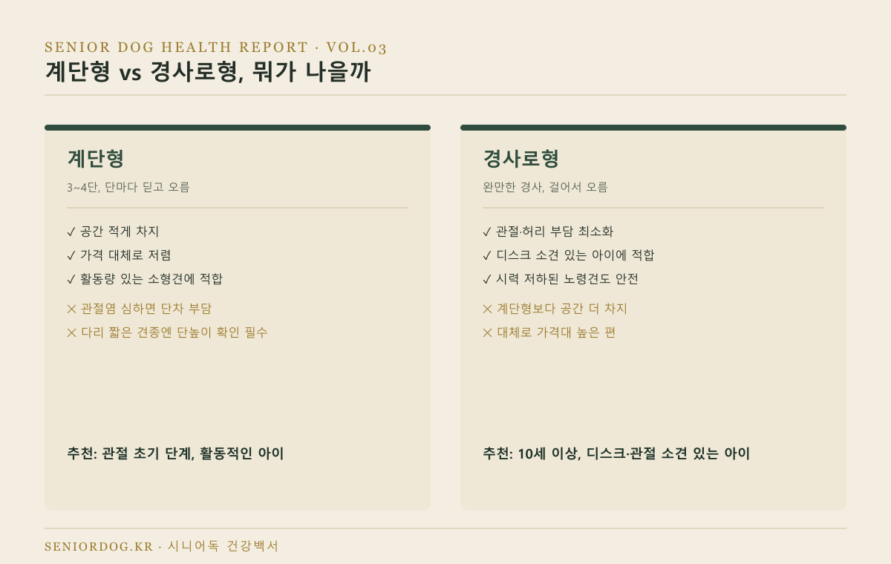
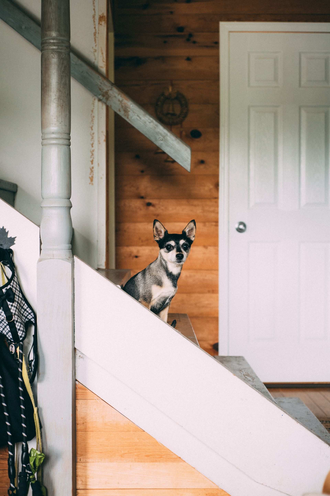
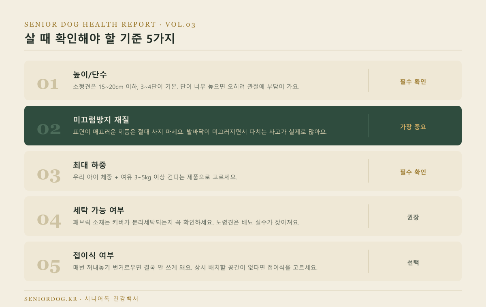
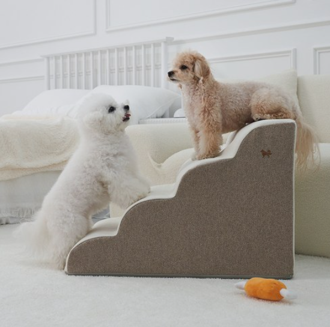
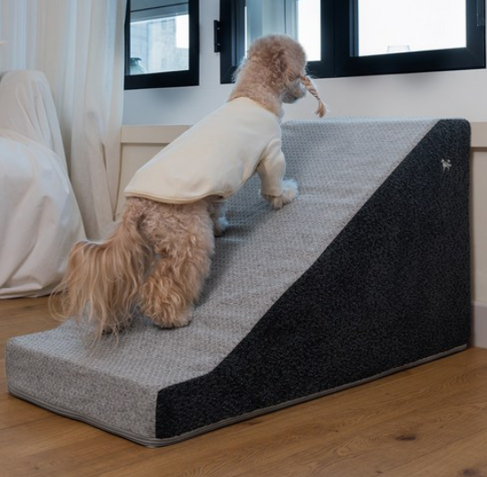
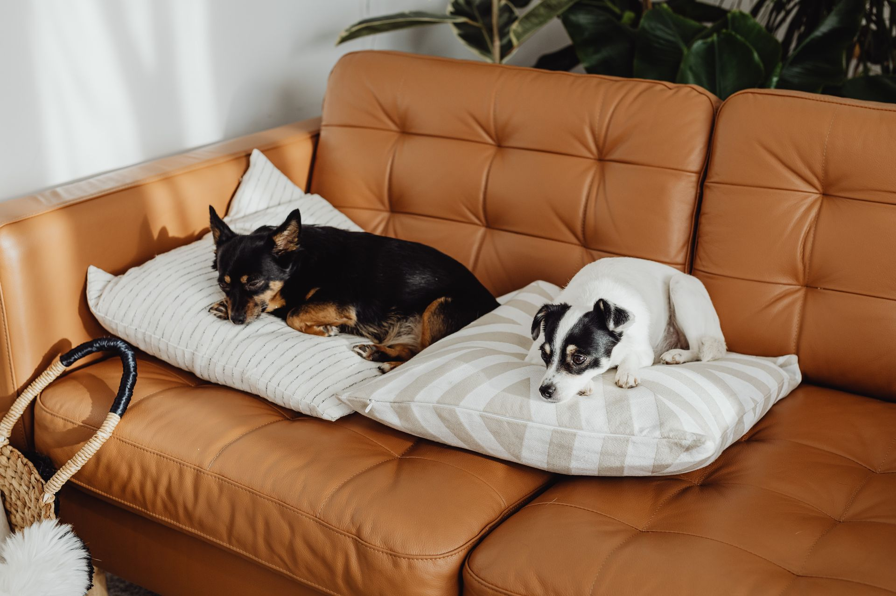

노령견 계단·미끄럼방지 용품
비교, 뭘 사야 할까
1편 체크리스트에서 “계단이나 소파를 오르내리는 걸 주저한다”에 해당됐다면, 지금 바로 계단이나 경사로 하나 놔주세요. 미루다가 슬개골탈구나 디스크로 이어지면 병원비가 훨씬 더 나가요. 오늘은 어떤 걸 사야 하는지, 헷갈리지 않게 딱 정리해드릴게요.

· 계단형은 활동적인 아이한테, 경사로형은 관절·디스크 소견 있는 아이한테 맞아요.
· 소형견 기준으로 계단 높이 15~20cm 이하, 3~4단이 기본값이에요.
· 미끄럼방지 처리 안 된 제품은 오히려 다치게 만드니, 재질부터 확인하고 사세요.
- 왜 계단이 노령견한테 진짜 필요한가
- 계단형 vs 경사로형, 뭐가 나을까
- 살 때 확인해야 할 기준 5가지
- 추천 제품
- FAQ
왜 계단이 노령견한테 진짜 필요한가
소형견이 소파나 침대에서 반복적으로 뛰어내리면, 그 충격이 그대로 무릎(슬개골)과 허리(척추 디스크)에 쌓여요. 한두 번은 괜찮아 보여도, 노령견은 이미 관절이 약해진 상태라 누적 손상으로 이어질 확률이 훨씬 높아요. 계단이나 경사로 하나로 막을 수 있는 문제를 방치할 이유가 없어요.
계단형 vs 경사로형, 뭐가 나을까
둘 중 뭘 사야 할지는 아이 상태만 보면 답이 나와요.
| 구분 | 계단형 | 경사로형 |
|---|---|---|
| 방식 | 3~4단, 딛고 오름 | 완만한 경사, 걸어서 오름 |
| 장점 | 공간 적게 차지, 저렴 | 관절·허리 부담 최소화 |
| 단점 | 관절염 심하면 단차가 부담 | 공간 더 차지, 가격 높은 편 |
| 추천 대상 | 공간·예산 빠듯하고 아직 별문제 없는 활동적인 아이 | 디스크·관절 소견 있는 아이, 또는 예방까지 확실히 하고 싶은 경우 |
확실하게 말씀드릴게요 — 관절에는 경사로형이 계단형보다 항상 더 안전해요. 이미 디스크나 관절염 진단을 받았다면 고민할 것 없이 경사로형으로 가세요. 진단 전이라도 예방까지 확실히 하고 싶다면 경사로형이 맞아요. 계단형은 “더 안전해서”가 아니라 공간을 덜 차지하고 저렴해서 고르는 선택지예요 — 아직 별문제 없고 활동적인 아이인데 공간·예산이 빠듯하다면 그걸로 충분해요.

살 때 확인해야 할 기준 5가지

- 높이/단수 — 소형견은 15~20cm 이하, 3~4단이 기본. 단이 너무 높으면 오히려 관절에 부담이 가요.
- 미끄럼방지 재질 — 표면이 매끄러운 제품은 절대 사지 마세요. 발바닥이 미끄러지면서 다치는 사고가 실제로 많이 일어나요.
- 최대 하중 — 우리 아이 체중 + 여유 3~5kg 이상 견디는 제품으로 고르세요.
- 세탁 가능 여부 — 패브릭 소재는 커버가 분리세탁되는지 꼭 확인하세요. 노령견은 배뇨 실수가 잦아져요.
- 접이식 여부 — 매번 꺼내놓기 번거로우면 결국 안 쓰게 돼요. 상시 배치할 공간이 없다면 접이식을 고르세요.
추천 제품
계단형 중에서는 이 제품을 추천드려요. 커브형이라 소형견이 딛기 편하고, 논슬립 코팅이 확실하게 되어있어요.

소형견 미끄럼방지 계단
소파·침대 오르내릴 때 무릎·허리 부담을 줄여주는 반려견 전용 계단이에요. 체중 10kg 이하 소형견 기준으로 높이가 맞는 제품을 고르시는 게 중요해요.
도그아이 강아지 논슬립 미끄럼방지 4단 커브 스텝 ↗경사로형은 이 제품이에요. 완만한 경사로 되어있어서 관절염이나 디스크 소견 있는 아이도 부담 없이 오르내릴 수 있어요.

소형견 미끄럼방지 경사로
계단 없이 완만하게 오르내리는 경사로형이라 무릎·허리에 부담이 거의 없어요. 10세 이상이거나 이미 관절·디스크 소견이 있는 아이한테 특히 추천드려요.
슈퍼펫 강아지계단 논슬립 미끄럼방지 슬라이드 스텝 ↗
자주 묻는 질문
Q. 계단이랑 경사로 둘 다 놔줘야 하나요?
A. 굳이 그럴 필요 없어요. 위 비교표 기준으로 아이 상태에 맞는 것 하나면 충분해요. 소파용, 침대용으로 위치만 다르게 하나씩 더 놓는 게 훨씬 실용적이에요.
Q. 강아지가 계단을 무서워해서 안 쓰려고 해요.
A. 처음엔 간식으로 유인해서 한 단씩 오르내리는 연습을 시켜주세요. 대부분 1~2주면 적응해요. 그래도 안 쓴다면 경사로형으로 바꿔보시는 것도 방법이에요.
Q. 원목 계단이랑 패브릭 계단, 뭐가 나아요?
A. 원목은 튼튼하고 오래 쓰지만 무겁고 세탁이 안 돼요. 패브릭은 가볍고 커버 세탁이 되는 대신 내구성이 떨어져요. 배뇨 실수가 잦은 아이라면 패브릭(세탁 가능) 쪽을 추천드려요.
다음 글
다음 글에서는 노령견 치매(인지기능장애) 초기 증상 7가지를 다룹니다.